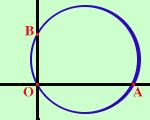

|
Per tre punti non allineati passa una ed una sola circonferenza. Date le coordinate di tre punti vogliamo risalire all'equazione della circonferenza (naturalmente il problema si puo anche risolvere geometricamente) Per semplicita' risolviamo il problema su un esempio pratico Se hai bisogno anche della spiegazione teorica Trovare l'equazione della circonferenza passante per i punti O(0,0) A(6,0) B(0,3) Prendo l'equazione generica della circonferenza x2+ y2 + ax + by + c = 0
6a + c = -36 3b + c = -9 Sostituisco c = 0 nella seconda e nella terza 6a = -36 3b = -9  a = -6 b = -3 L'equazione cercata e' x2+ y2 - 6x - 3y = 0 |